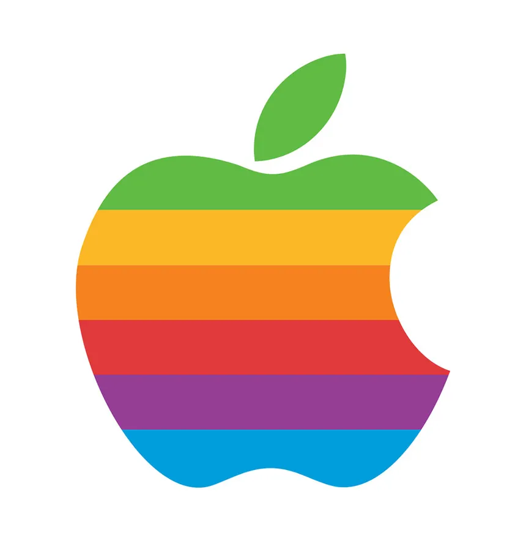

The Apple logo’s story begins with its first design in 1976, created by Ronald Wayne, featuring Isaac Newton sitting under an apple tree, symbolizing the moment of his discovery of gravity.
However, Steve Jobs found this logo too old-fashioned and difficult to print on smaller products, leading him to hire Rob Janoff to redesign it.
Rob Janoff Apple Logo Diagram - Circles 1977
Rob Janoff Final Color Palette Matches Apple’s Cutting Edge Color Technology

Some tips about drawing your logo
A logo should be distinctive and not resemble other logos to ensure it can be copyrighted and recognized easily
The logo should be memorable and evoke positive associations about the business/project
The logo should reflect the brand’s values and appeal to the target audience
Use color wisely to convey the right emotions and ensure the logo works well in both color and black and white
The logo should maintain its clarity and proportion when resized. [image types: svg, png, webp, eps, pdf]
Maybe avoid following current design trends to ensure the logo remains relevant over time - [think about the longevity of your logo]
Understand the customer base and market to create a logo that resonates with them
Gather feedback from focus groups to ensure the logo appeals to the target audience.
These tips are essential for creating a logo that effectively represents a brand and resonates with its audience.
You only require a pen and paper, or pencil and paper Just a take a few minutes to draw a few logos
Voluntarily, and we are short on time, so won’t do this. But if we had the time, each of you would come up here and share your logo, as well as your vision for the logo.